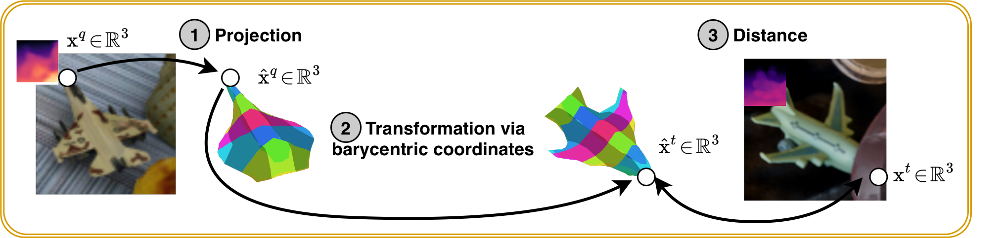
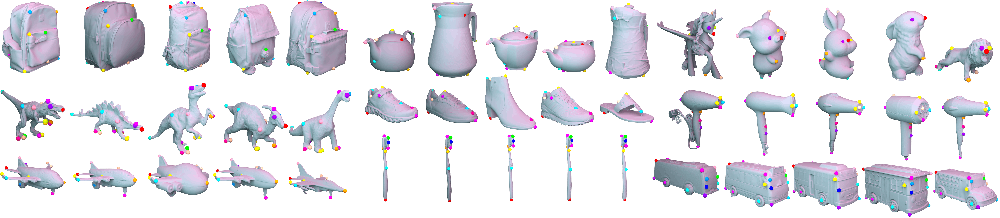
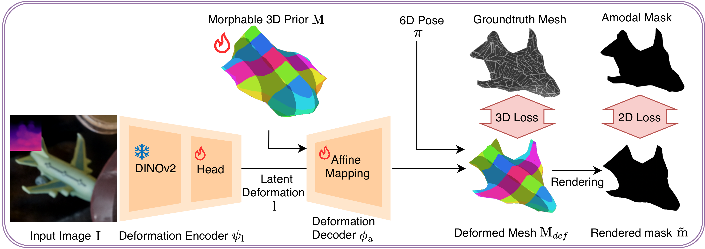

3D morphable prior
A canonical category shape as a signed distance field, turned into a mesh via Differentiable Marching Tetrahedra — a hybrid volumetric-mesh representation that is stable to optimize.
1 University of Freiburg
·
2 CISPA Helmholtz Center for Information Security
* Equal contribution ·

We define monocular category-level 3D correspondence in camera space, release HouseCorr3D to benchmark it, and propose Morpheus, a morphable-prior model that sets a new state of the art — without any correspondence supervision.
Understanding 3D objects from images is fundamental to robotics and AR/VR. While recent work has progressed in category-level pose estimation, current representations fail to capture the fine-grained semantics needed for reasoning about object parts, functions, and interactions. We study category-level 3D correspondence in camera space — predicting, from a single image, 3D locations that remain consistent across instances within a category — and show it can emerge without explicit correspondence supervision by learning a shared morphable object prior. We introduce HouseCorr3D, the first large-scale benchmark for monocular category-level 3D correspondence, with 178k images across 50 household object categories, 280 unique instances, and 3D keypoint annotations directly on CAD models — including amodal correspondence labels for occluded regions and explicit symmetry annotations. We further propose Morpheus, which learns morphable category-level shape priors by disentangling canonical shape, deformation, and object pose; semantically meaningful 3D correspondences in camera space then emerge implicitly, setting a new state of the art on HouseCorr3D.
Traditional 3D understanding stops at pose, detection, or reconstruction — it never says which point on one object is the same functional part as on another. 2D semantic correspondence tries, but is trapped by viewpoint, occlusion, and symmetry.
We move the question into 3D camera space: given a 3D query point on one instance, return the 3D point on another instance that represents the same semantic part — resolving ambiguities that image-space matching cannot.
Given query & target RGB-D images Iq, It of the same category and a query 3D point xq ∈ ℝ3 in the camera space of Iq, predict xt ∈ ℝ3 in the camera space of It at the same semantic point.
f : (xq, Iq, It) → xt
Evaluate parts that are occluded or off-screen — impossible for any 2D matcher.
Whole orbits of rotation-equivalent points count as valid.
Camera space removes the ambiguous center & scale of object-centric spaces.

The first large-scale benchmark for category-level 3D correspondence from monocular images
Built on the photorealistic synthetic subset of Omni6DPose, HouseCorr3D crops 178k test images (and 2.6M for training) across 50 everyday categories. Keypoints are annotated once on CAD meshes, then projected through ground-truth poses into every view — yielding consistent, amodal-aware labels at scale. It is a test-only benchmark: keypoints are used exclusively for evaluation.

Correspondences for parts that are occluded or out of frame — inferring the full 3D extent of objects.
Discrete & continuous symmetries handled by treating the full rotation orbit as valid matches.
One annotation on a CAD mesh scales to 178k pairs through ground-truth pose projection.
Synthetic but high-quality: exact-by-construction labels, modeled transparency for depth.
Prior benchmarks evaluate in 2D camera or 3D object space. HouseCorr3D is the first to target 3D camera space.
| Dataset | Pairs | Classes | Input | Eval. space | Symmetry | Occlusion |
|---|---|---|---|---|---|---|
| Pascal-Parts | 4k | 20 | 2D | 2D camera | ✗ | ✗ |
| PF-Pascal | 2k | 20 | 2D | 2D camera | ✗ | ✗ |
| SPair-71k | 71k | 18 | 2D | 2D camera | ✗ | ✓ |
| KeypointNet | — | 16 | 3D | 3D object | ✗ | ✗ |
| CPNet | — | 25 | 3D | 3D object | ✓ | ✗ |
| DenseCorr3D | — | 23 | 3D | 3D object | ✓ | ✗ |
| HouseCorr3D ours | 178k | 50 | 2.5D | 3D camera | ✓ | ✓ |
PCK@0.1
d(x̂t, xt) < 0.1 · max(h, w, d)
A prediction is correct if within 10% of the largest side of the object's 3D bounding box. We report 2D, 3D modal (both points visible), and 3D amodal (one point occluded) settings.
Morphable category priors, so 3D correspondence emerges
Morpheus represents every object in a category as an identity-preserving deformation of one shared template mesh. Because template vertices keep their identity while the mesh morphs, correspondence becomes free: points tied to the same template vertex are the same semantic part across instances. 3D correspondence reduces to predicting a pose and a deformation.

A canonical category shape as a signed distance field, turned into a mesh via Differentiable Marching Tetrahedra — a hybrid volumetric-mesh representation that is stable to optimize.
A DINOv2 encoder maps the image to a latent code that drives a per-vertex affine field ϕa(v,l) = α(v,l)⊙v + δ(v,l), morphing the template to the observed instance.
A pretrained pose-diffusion network places the deformed mesh into camera space, disentangling pose from shape and canonicalization.
Pixel-wise MSE + distance-transform overlap against ground-truth amodal masks.
Aligns deformed mesh vertices to ground-truth geometry for accurate 3D shape.
Eikonal (SDF), small-deformation ℓ₂, and edge-based smoothness keep meshes clean.
No explicit correspondence supervision. Semantic alignment emerges because every instance must explain its image through the same canonical template.
A new state of the art on 2D, 3D-modal, and 3D-amodal correspondence
Morpheus outperforms every 2D and 3D baseline. ★ 2D predictions lifted to 3D via depth — amodal is not applicable.
| Method | 2D | 3D Modal | 3D Amodal | 3D (M+A) |
|---|---|---|---|---|
| DINOv2 ★ | 22.9 | 24.4 | n/a | n/a |
| MagicPony2D ★ | 15.7 | 14.0 | n/a | n/a |
| NOCS ★ | 26.7 | 26.4 | n/a | n/a |
| GenPose++ | 36.3 | 37.0 | 32.9 | 34.3 |
| MagicPony + GP++ | 10.7 | 7.5 | 7.1 | 7.1 |
| Morpheus w/o Def. | 39.1 | 40.2 | 37.8 | 38.4 |
| Morpheus ours | 41.2 | 43.7 | 40.8 | 41.5 |

5 classes · 24 instances · 134 keypoints. Morpheus generalizes to real data.
| Method | 2D@0.1 | 3D@0.1 |
|---|---|---|
| MagicPony2D | 16.8 | n/a |
| GenPose++ | 37.0 | 25.1 |
| MagicPony + GP++ | 12.6 | 7.3 |
| Morpheus ours | 44.7 | 34.8 |
Fixed template topology can't model large topological change; correspondence is sensitive to pose error; smoothness regularization can over-smooth thin structures.
If you find HouseCorr3D or Morpheus useful, please cite
@misc{sommer2026categorylevel3dcorrespondencecamera,
title = {Category-Level 3D Correspondence in Camera Space via Morphable Object Priors},
author = {Leonhard Sommer and Artur Jesslen and Basavaraj Sunagad and Adam Kortylewski},
year = {2026},
eprint = {2605.28257},
archivePrefix = {arXiv},
primaryClass = {cs.CV},
url = {https://arxiv.org/abs/2605.28257},
}